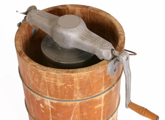

Have one last bowl of cold, sweet ice cream before summer goes by, though the crisp air to come doesn't have to stop the fun. In a few weeks try it paired with a hot mug of coffee or topping a piece of pie fresh from the oven, this frosty treat makes a perfect perennial treat. No matter how you serve it, nothing beats sweet ice cream when it's homemade!
Its fresh, creamy flavor is just the beginning: Homemade ice cream can be as healthy or as decadent as you want it to be, as smooth or icy, rich or refreshing ? and the flavor possibilities are almost infinite. With a few simple variations on the basic recipe you can even make sherbet or frozen yogurt. Whether light or creamy, the real ingredients used in homemade ice cream produce a result that's far superior, taste- and health-wise, to store brands made with artificial flavors, colors, sweeteners and preservatives.
At its most basic, ice cream requires a dairy ingredient (such as milk, cream or half-and-half), a sweetener (honey, molasses, white or brown sugar), and a flavoring. Experiment with fruit, nuts, candy, coffee ? whatever suits your fancy!
To get started, try these recipes from Making Ice Cream & Frozen Yogurt by Maggie Oster:
Basic Vanilla Ice Cream
1 quart heavy cream (substitute light cream or half-and-half for a lower-calorie treat)
1 cup sugar (or 1/3 cup honey)
1 tbsp pure vanilla extract
Mix ingredients and pour into a shallow tray such as a cake pan. Place tray in freezer at the coldest setting or a deep freezer for 30-to-60 minutes, or until the mixture is mushy but not solid.
Scrape mixture into a chilled bowl and beat with a rotary beater or electric mixer as rapidly as possible until smooth. Return mixture to the tray and freezer. Repeat the beating process when mixture is almost frozen solid. (If desired, add chopped nuts or liqueur here.)
Return mixture to tray. Cover with plastic wrap to prevent ice crystals from forming on top. Place in freezer until solid. Makes 1 1/2 quarts or about 6 servings.
Applesauce Raisin Spice Nut Ice Cream
To the Basic Vanilla recipe add:
1 1/2 cups applesauce
1/4 tsp each nutmeg, cinnamon and cloves, ground
1/2 cup raisins
3/4 cup pecans or walnuts
Soak raisins in enough water or brandy to cover until plump. Drain, chop and add with nuts to ice cream when it has become mushy (see Basic Vanilla instructions, above).
Find additional ice cream, sherbet and frozen yogurt recipes--plus ideas and instructions for dairy and natural sugar substitutions--in the Making Ice Cream and Frozen Yogurt e-handbook from Mother Earth News.
Share your homemade ice cream tips and recipes in the comments section below.
|
 ISTOCKPHOTO.COM Making ice cream with an old-fashioned crank mixer is a fun activity--and working up a sweat will only make the sweet treat more delicious! |
|
|